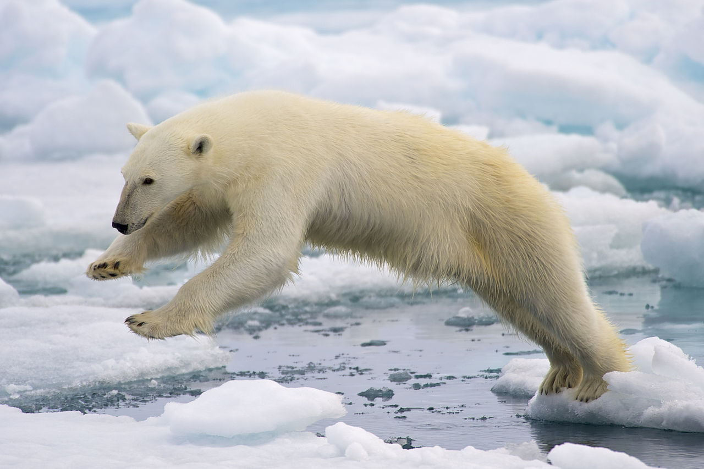

Niedźwiedź Polarny!
Niedźwiedź Polarny
Niedźwiedź polarny, niedźwiedź biały – gatunek dużego ssaka drapieżnego z rodziny niedźwiedziowatych, zamieszkującego Arktykę. Jest drapieżnikiem szczytowym w zasięgu swojego występowania. Grube futro i warstwa tłuszczu chronią go przed zimnem. Włosy tworzące sierść niedźwiedzia są półprzezroczyste; sierść jako całość ma zazwyczaj kolor biały lub kremowy, przez co umożliwia zwierzęciu dobry kamuflaż. Skóra ma barwę czarną[9]. Niedźwiedź polarny ma krótki ogon i małe uszy, co pomaga mu redukować utratę ciepła. Stosunkowo mała głowa i długie, zwężające się ku tyłowi ciało nadają mu opływowy kształt przydatny do pływania. Jest ssakiem prowadzącym niemal morski tryb życia, potrzebującym do przetrwania jedynie kawałka pływającego lodu i żywności znajdowanej w wodzie oraz miejsca do urodzenia i odchowania młodych. Jego systematyczna (łacińska) nazwa Ursus maritimus oznacza „niedźwiedź morski”. Przystosował się do życia na lądzie, morzu i lodzie.
